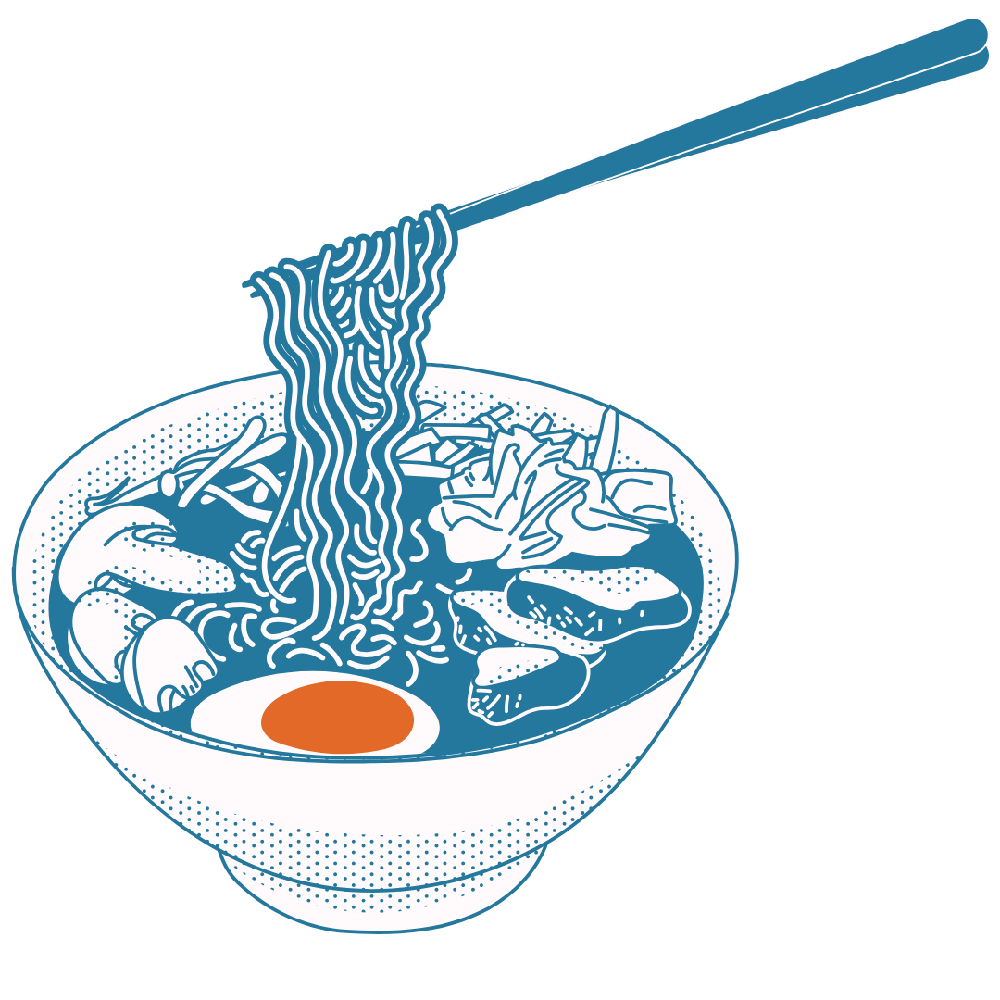

reservado especialmente para ti
Acerca de Nosotros

GOMORI SUSHI
Se trata de una propuesta que combina la tradición culinaria japonesa con la eficiencia de la automatización. Este proyecto plantea la creación de un restaurante de sushi donde el proceso de reserva de mesas se gestiona de manera automática, eliminando la necesidad de intervención manual y optimizando la experiencia del usuario. Permitiendo
- Reservar su mesa en segundos, sin necesidad de llamadas o interacción con el personal.
- Explorar el menú digitalmente, accediendo a descripciones detalladas y recomendaciones.
- Recibir confirmaciones instantáneas, asegurando disponibilidad en tiempo real.